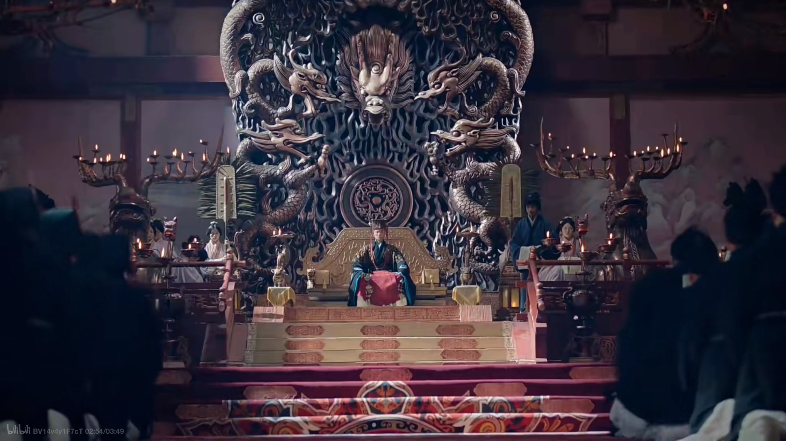
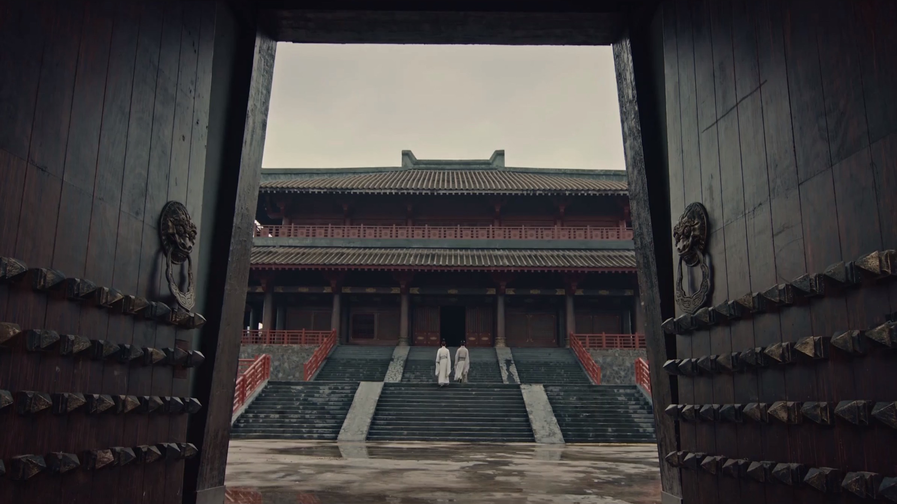
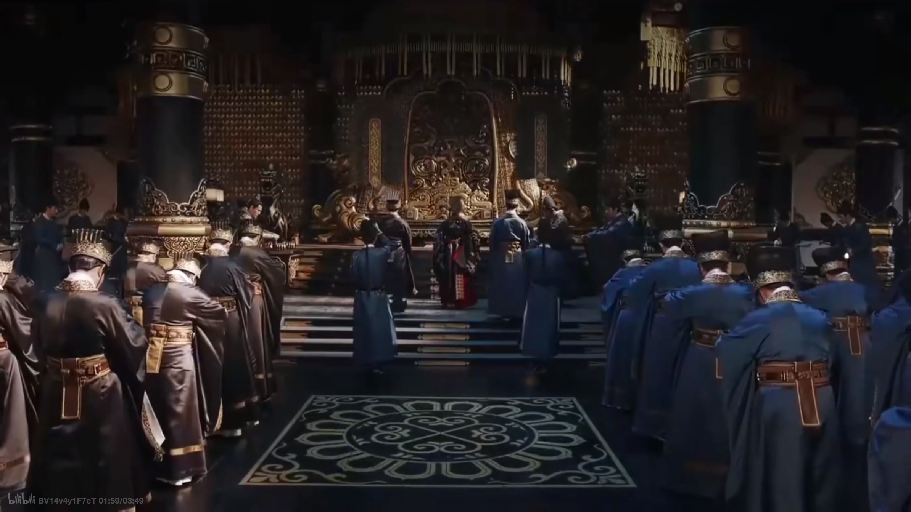
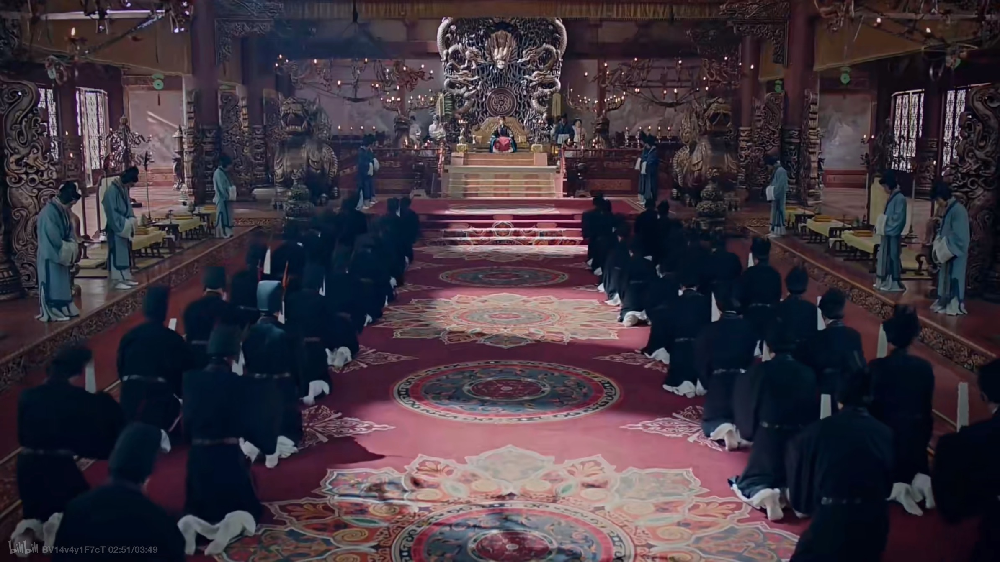
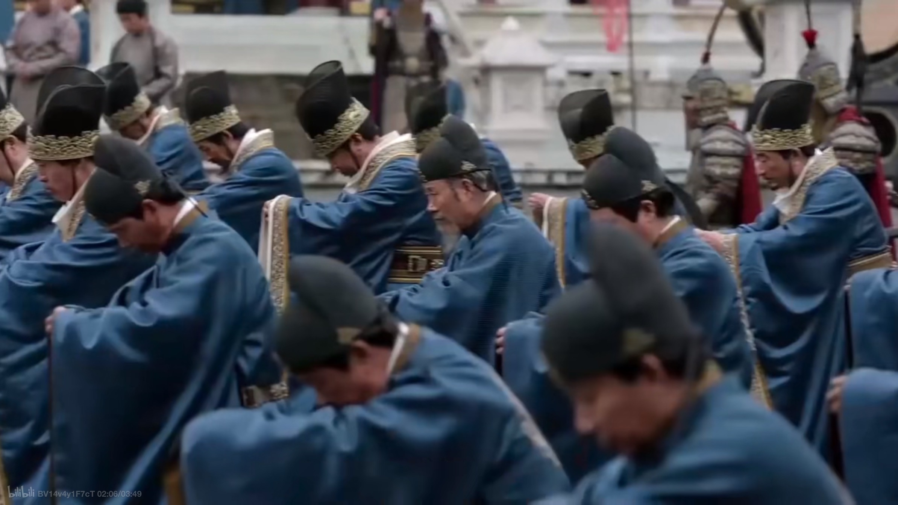

The centralization of authority was gradually strengthened in ancient China from the Zhou dynasty to the Ming, Qing dynasty, because the prime minister system was abolished, central supervision was strengthened, and power of local governments were weakened.

Impact & Power Dynamics
影响与权力变迁
Power Dynamics
权力变迁
Early relationship between the power of the Prime Minister and the monarchy
早期相权与君权关系
On the basis of these checks and balances on the monarchy from the Prime Minister power, the successive monarchs are obviously committed to strengthening their own absolute power, so they will choose to gradually suppress and disperse the Prime Minister power. The relationship between the monarchical power and the prime minister power evolved along the principle of “Superior to the monarch and inferior to the minister”. According to the relatively agreed research conclusion of the academic circles, we can say that a history of the evolution of the Prime Minister system in China is the history of the monarchy’s continuous control over the prime minister’s power.
It can be seen from this, the birth of the Prime Minister Power is actually derived from the needs of the monarch. Monarchical power is absolute and ultimate, while ministerial power is derivative and comes directly from the emperor. In other words, there is a difference between the Monarchical power and the prime minister power. But this obviously does not mean that the power of the prime minister is completely controlled by the monarch, because in fact, throughout history, the power of the Prime Minister has for a long time played the decentralization of power, so that the monarch is not completely arbitrary. Whether it is the actual power to appoint local officials held by Cao Cao, the prime minister who held power at the end of the Eastern Han dynasty, or the “Langya Wang clan and the royal family jointly owned the world”. Print]in the Eastern Jin dynasty, it shows that the power of the monarch once was insufficient, to a certain extent, power can be “stolen” by officials. It is worth noting that one of the most famous prime ministers in Chinese history, Zhang Juzheng, also said, “I am not the prime minister, I am the Regent”.
Constraint prime minister power
制约相权
As an important political power in ancient Chinese history, Prime Minister Power once played the role of gaming and restricting each other with imperial power to a certain extent, the gradual weakening of the Prime Minister Power until it was finally abolished It meant that the constraints on the monarchy had almost disappeared, and political power was thus largely in the hands of the individual monarch. Before discussing the evolution of the monarch power and the prime minister power, we first need to clarify the definition of these two kinds of powers. “Huang Di(皇帝)(Emperor)”was originally a generic term for “San Huang Wu Di(Three Sovereigns and Five Emperors)” in the Chinese context. Qin Shi Huang, who created the Qin dynasty as a unified dynasty, called himself “Huang Di(Emperor)”, and the Emperor thus became the name of supreme ruler of China. The power of the emperor, it mainly includes the personnel appointment power, the military power, and the financial power. The Prime Minister’s power of taking charge of the state administration originated from the spring and Autumn period and the Warring States period. Since then, the prime minister has been transformed from a ceremonial tutor into a political position with executive power for the monarch. The reason for this change is the need to assist the monarch in the management of state affairs, but also because the monarch needs to use the Prime Minister power as a tool to resist the power of the aristocracy. According to Records of the Historian, “The Prime Minister’s duties, up to assist the emperor to regulate yin and yang, to comply with the four seasons, down to the realization of the essence of all things, externally suppress the surrounding regimes and vassals, internally close to ordinary people, and ensure all the officials can do their duty”.
In the Tang dynasty, when the power of the prime minister was divided into three parts by the Three Departments and Six Ministries system, the checks and balances of the power of the prime minister still existed. Mr.QianMu once mentioned that in the Tang dynasty,“Orders issued directly by the emperor, without the seal of the Zhongshu or Menxia Department, were considered illegal at the time and could not be recognized by the organs at the following levels. Therefore, “Without the Fengge(凤阁 another name of Shangshu) and Luantai(鸾台 another name of Zhongshu), how can it be a order”. This still means that all the emperor’s commands must pass through the Zhongshu and Menxia departments. Of course, such checks and balances can only be regarded as a theoretical level of checks and balances, because by the Tang dynasty, the prime minister has been significantly weakened. Therefore, after the prime minister Yizhi Liu said such words as “Without the Fengge (Shangshu) and Luantai (Zhongshu) , how can it be a order”, he instead provoked Wu Zetian and was given death by Wu Zetian.
In the Western Han dynasty, the main way for the monarch to restrain the prime minister and realize the centralization of power was to control the outer court prime minister by the inner court, which was controlled by the monarch’s trusted followers, while in the Eastern Han dynasty, the three councillors was controlled by the Shangshutai (a central authorities department), in the Tang Dynasty, the Prime Minister was deprived of his powers by means of a Three Departments and Six Ministries system, which divided the powers of the prime minister into three parts. In the Song dynasty, the three secretaries and the Privy Council were set up to separate the powers of the Prime Minister. In the Ming dynasty, the prime minister was publicly abolished, and deliberately obscure the role and identity of the cabinet.
Finally, in the Qing dynasty, there’s a department called Military Affair were set above cabinet, and the Military Affair was directly responsible to the emperor and was completely controlled by the emperor, which was equivalent to the emperor's private secretary. By this time, with the disappearance of the prime minister's power, political power was almost completely concentrated on the emperor. As institutions change, the number of prime ministers also changed. In the early days of the Han dynasty, there was usually only one prime minister, but later there were more and more prime ministers(17 in Emperor Xuan of Tang Dynasty) , and the posts became more and more irregular, the Assistant Administrator（参知政事）has also been created to decentralize the power. It is also a well-known phenomenon that before the Song dynasty, the prime minister maintained the tradition of “Sitting and talking about Tao”. He could sit and talk about politics with the emperor, and from the Song dynasty , he could only “Stand and report”. All this shows that the relationship between the superior and the subordinate is constantly strengthening.
Supervision System
监察制度
Another factor that had an essential impact on the power distribution in official and political system is the central supervision which keeps being strengthening throughout the history. The supervision system started early from the Warring states time. As a system created with the objective of supervise officials and guarantee the stable ruling of rulers, the supervision system played the role of helping emperor to restrict bureaucratic power and prevent the emergence of power decentralization. On the basis of the supervision system inherited from the previous dynasties, the emperors sought to reduce the restriction and supervision of their own imperial power by strengthening the restriction on the power of others. Therefore, as emperors from different dynasties gradually strengthens the supervision upon local powers and officials’ powers, the space left for officials, headed by the prime minister, was compressed hugely. In order to explore the impact of the development of the supervision system on the political power, we first need to understand the definition and specific powers of the supervision system. The supervision system was a special "quasi-judicial" system of state supervision established in ancient China, which is a feudal state to monitor government officials, serve the interests of the state and the emperor, maintain the established ruling order, and ensure the normal functioning of the state machinery.
While considering the power distribution, there’s an famous saying of Montesquieu: “Constant experience shows us that every man invested with power is apt to abuse it, and to carry his authority as far as it will go”. In Montesquieu’s theory, such issue of abuse power can be solved by the checks and balance system which regulate power by another power. However, the supervision system in ancient China, was indeed used for regulating abuse power, but only on officials power and local power. Another major feature of the supervision system was its independent functioning mechanism and dependence on the imperial power. From the central government (the monarch) to the various levels of the inspectorates, a relatively independent system was formed with a single vertical line, with the inspectorates serving the monarch directly and relatively separate from executive departments, and the inspectors relatively separate from the government bureaucrats.
Expostulation System
谏言制度
Since there existed a system of supervision to limit the power of bureaucrats, it is worth mentioning that an institution for judging and criticizing the monarch's decisions also existed at one time in Chinese history, namely the expostulation system. The derivation of the word "expostulation" in Chinese means "to advise the emperor when he makes a wrong choice, to disagree with the absolute power of the monarch". Thus, the expostulation system, as the name implies, is a system that allows one to give opinions and even criticize the monarch's actions and decisions. Both the expostulation system and the supervision system were organs that played a supervisory role in ancient Chinese politics; however, the limitations of the expostulation system were considerable because it was not based on another kind of power that could be played with monarchical power, but on some moral norms and principles that had long been enunciated by Confucian doctrine and were accepted by the monarch only when they were approved by an enlightened ruler.
The expostulation system is not compulsory, cannot really limit the absolute power of the monarch, and cannot even be regarded as "freedom of speech" in the concept of democracy. However, the supervision system, which was dependent on the monarch's power and served him directly, had the support of the monarch's power and was therefore able to truly restrain the power of the prime minister and bureaucrats who once decentralized the monarch's power. What’s more, the development trend of the supervision system and expostulation system were quite different. The supervision system has been continuously improved and strengthened, seeking to limit any power outside monarchy in the largest extent, while the expostulation system has been gradually shelved since the Yuan dynasty, and even completely lost its role in the Ming and Qing Dynasty. Such a phenomenon lead to the result that the monarchical power expand with few restriction, while other organs that used to have power was continuously weakened.
Conclusion
总结
In a word, from the Han dynasty to the Ming and Qing dynasties, the prime ministers were developed by the Emperor’s private ministers. If they had too much power, they would be banned and replaced by a new body of prime ministers developed around the emperor. With the imperial power as the center, the Prime Minister of China presents a cycle of replace and reproduction state. The monarchical power is expanding, and there is less and less space in the system remained for the Prime minister power. All these are due to the idea of the “Family country”[ Sheng, Dai. The Book of Rites], to maintain the absolute power of the monarch. In Zhang Taiyan’s words, it was because the emperor, “Appreciate those closest to him, hated those whose prestige was greater than that of the sovereign.”



